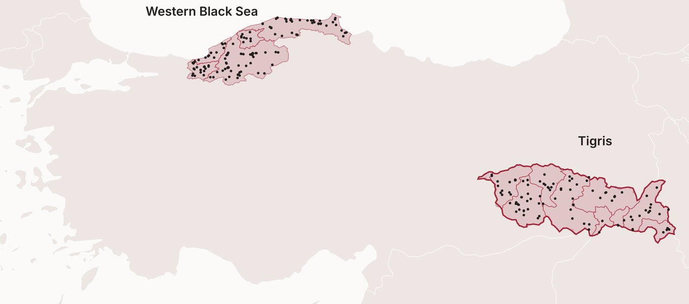
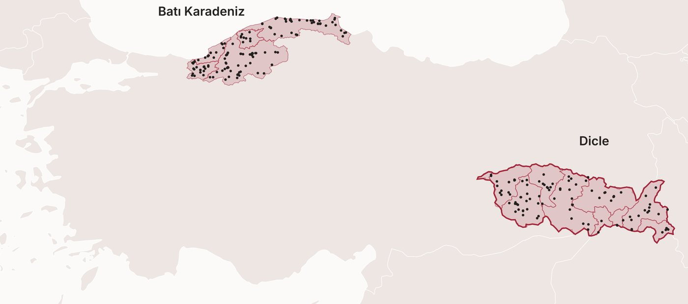

Hidromod · Data and Modeling SpecialistVeri ve Modelleme Uzmanı
Jan 2026 – presentOca 2026 – günümüzAnkara, Türkiye · full-timeAnkara, Türkiye · tam zamanlı
- Climate-change assessment and hydrological modeling for the Western Black Sea and Tigris basins within the basin master-plan studies of the General Directorate of State Hydraulic Works (DSİ), supporting long-term water-resources planning.
- Build, calibrate and evaluate rainfall–runoff models with HBV and TUWmodel, alongside the WRF-Hydro simulations of the project team, together with data-driven methods for flood analysis, watershed management and hydropower optimization.
- Develop reproducible R and Python workflows for hydrometeorological data quality control, basin-scale analysis, climate-model outputs and operational decision support.
- Contribute to high-resolution climate projection workflows and HPC execution on TRUBA and MareNostrum 5, connecting model outputs with agricultural and water-resources applications.
- Devlet Su İşleri Genel Müdürlüğü (DSİ) havza master plan çalışmaları kapsamında Batı Karadeniz ve Dicle havzaları için iklim değişikliği değerlendirmesi ve hidrolojik modelleme; uzun vadeli su kaynakları planlamasına destek.
- Taşkın analizi, havza yönetimi ve hidroelektrik optimizasyonu için HBV ve TUWmodel yağış–akış modellerinin kurulması, kalibrasyonu ve değerlendirilmesi; proje ekibinin WRF-Hydro benzetimleri ve veriye dayalı yöntemlerle birlikte.
- Hidrometeorolojik veri kalite kontrolü, havza ölçekli analiz, iklim modeli çıktıları ve operasyonel karar desteği için tekrarlanabilir R ve Python iş akışları.
- TRUBA ve MareNostrum 5 üzerinde yüksek çözünürlüklü iklim projeksiyonu iş akışlarına ve YBH çalıştırmalarına katkı; model çıktılarının tarım ve su kaynakları uygulamalarıyla ilişkilendirilmesi.